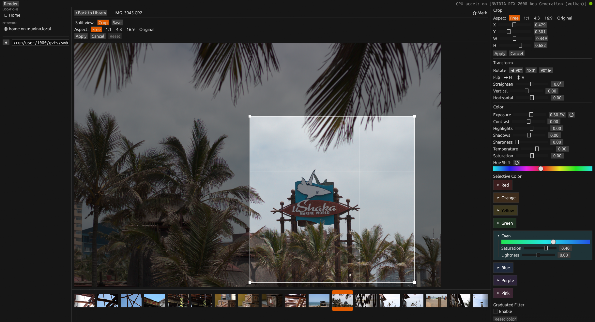

Native Desktop Photo Editor
Most photo editors are either bloated creative suites or flimsy web apps. Neither respects the simple workflow: browse a folder, tweak an image, export the result.
Photograph is a native Rust desktop photo browser and editor built for practical image management and color grading. It opens fast, handles RAW files, and stores non-destructive edits as sidecar JSON so your originals are never touched.
GitHub README • Snap Store • Architecture
Screenshot

What It Does
- Folder browser with thumbnail grid
- Full image viewer/editor windows (egui/eframe)
- EXIF metadata display
- Non-destructive edits stored as sidecar JSON
- Geometry: rotate, flip, crop, straighten, keystone
- Color/tone: exposure, white balance, HSL, selective color, graduated filter, highlight/shadow recovery
- Export as JPG, PNG, or WebP with quality/compression and optional resize
- Background rendering and export progress UI
Supported Formats
RAW decode via rawler: RAF, DNG, NEF, CR2, ARW.
Standard formats via the image crate: JPG, PNG, TIFF, WebP, BMP.
The browser also recognizes HEIC and AVIF extensions where decode support is available.
Quick Start
cargo install --git https://github.com/divanvisagie/Photograph
photographThe app opens a native window and remembers UI state between runs.
Ubuntu/Debian Dependencies
sudo apt install -y vulkan-tools
vulkaninfo --summary
If vulkaninfo cannot detect a Vulkan GPU adapter,
fix driver/runtime setup before running Photograph.
Development
cargo build
cargo run --bin photograph
cargo test
Live-reload dev loop (requires cargo-watch):
cargo install cargo-watch
make devPackaging
The Makefile supports Linux (.deb) and macOS
(.app bundle / .dmg) packaging.
make build # platform-aware packaging build
make install # platform-aware install
make build-linux # build .deb on Linux
make build-macos # build .app bundle on macOS
make package-macos # create .dmg disk imageArchitecture
Pipeline and architecture decisions are documented in detail:
License
GPL-2.0-only. See LICENSE.